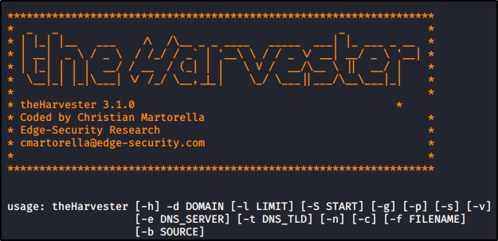

Utilizing theharvester
theHarvester is used to gather open source intelligence (OSINT) on a company
or domain.


use "-h" to display more info
Usage Examples:
theHarvester -d microsoft.com -b google -l 500 -f results.txt # Harvest for a domain, using Google, for 500 results
and write the output in results.
theHarvester -d microsoft.com -b all -l 1000 -f results.txt # Harvest for a domain, using all Sources,
for 1000 results and write the output in results.txt